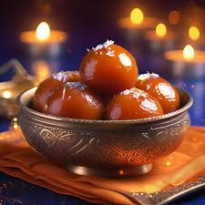

Gulab Jaman
Ingredeants
- 1 cup milk powder
- 1/4 cup all-purpose flour
- 2 tbsp ghee
- 1/4 cup milk
- A pinch of baking soda
For Syrup
- 1.5 cups sugar
- 1.5 cups water
- 2–3 cardamom pods
Recipe
- Mix milk powder, flour, soda, ghee, and milk into soft dough.
- Make small balls and fry on low heat till golden.
- Boil sugar, water, cardamom for 5 mins to make syrup.
- Soak fried balls in warm syrup for 1–2 hours.

Sondesh
Ingredeants
- 1 liter full-fat milk
- 2 tbsp lemon juice
- 3–4 tbsp powdered sugar
- Rose water/cardamom (optional)
- Pistachios for garnish
Recipe
- Boil milk, add lemon juice to curdle.
- Strain and hang chhena for 30 mins.
- Mash smooth, mix sugar & flavor.
- Cook for 4–5 mins on low flame.
- Shape, garnish, and chill before serving.